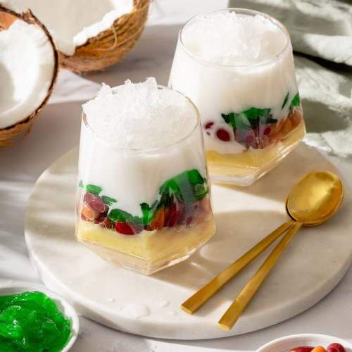

Che Ba Mau Recipe

Description
A colorful refreshing desert made of ice slush, beans,
jelly, and coconut cream
Ingredients
Mung Bean Layer
- 1/2 cup dried split mung beans
- 4 3/4 cup water
- 3 tbsp sugar
Pandan Jelly Layer
- 1 bsp 100% agar agar powder
- 2 cup water
- 1/4 tsp pandan extract
- 3 tbsp sugar
Red Bean Layer
- 1 can boiled red bean paste
Coconut Sauce
- 7 oz coconut cream
- 2 tbsp sugar
- 1/3 tsp salt
- 1/2 tsp tapioca or cornstarch
Other
Steps
Mung Bean Layer
- Rinse ½ cup of mung bean under running water.
- In a container, add ½ cup dried mung bean and
four cups of water. Soak the beans for at least
four hours or overnight.
- After soaking, drain the mung beans and add
to your rice cooker. Add ¾ cup of water and
lose the lid. Use the regular rice option or
put a 40 minute timer to cook the beans.
-
After the rice cooker is done, use your paddle
to mash the beans (this should be very easy
since the beans have softened immensely). Add
three tablespoons of sugar and continue to mash
and mix. Move to a container to rest, and cool
in the fridge until assembly.
Pandan Jelly Layer
-
In a saucepan, bring the water to a boil and
mix in the agar agar and sugar until it thoroughly
dissolves. Lower the heat and add the pandan extract.
Mix this until the liquid turns green and move to
a glass container to cool.
-
When it’s at room temperature, move to the fridge
to chill for two hours. The pandan jelly should be
firm to the touch and easily remove from the glass
container.
-
Cut the jelly into your preferred shape to eat.
Coconut Sauce
-
In a saucepan, mix together the coconut cream,
sugar, and salt over medium heat.
-
Add the tapioca starch carefully with a whisk.
Cook for about one to two minutes until it
thickens to the consistency of diluted pudding.
-
Remove from the heat and move to a glass container
to cool. Chill in the fridge until time of assembly.
Assembly
-
Layer the ingredients in the order of red bean
paste, mung beans, pandan helly, shaved ice,
and coconut sauce. Or layered it as preferred.